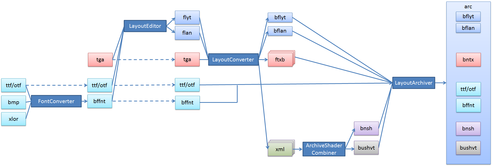

ここでは、レイアウトにおけるファイルフォーマットとコンバートの流れについて説明します。
コンバートの流れ

- 図では、左から右にデータが処理されていきます。
- 最終的には、arc（レイアウトアーカイブ）ファイルに変換され、ランタイムライブラリにロードされます。
- 以下のように分類されています。
- 濃青の四角は、ツール
- 青い四角は、配置とアニメーション
- 赤い四角は、テクスチャ
- 水色の四角は、フォント
- 緑の四角は、シェーダのバリエーションファイル
- 紫の四角は、シェーダー
- 灰色の四角は、シェーダバリエーションテーブル
- 大まかに説明すると、LayoutConverter 以前は、デザイナーが取り扱う領域、LayoutConverter 以後はプログラマが取り扱う領域です。
配置、アニメーション(flyt/flan)
- 配置、アニメーションは、flyt/flan ファイルで管理されます。
- flyt/flan ファイルは、LayoutEdtior によって編集されます。
- flyt/flan ファイルは、LayoutConverter でバイナリ変換され bflyt/bflan ファイルになります。
テクスチャ(ftxb, bntx)
- tga (テクスチャ)ファイルは、LayoutConverter で処理されて、ftxb ファイル（テクスチャバイナリ中間ファイル）に変換されます。
- 複数の ftxb ファイルは、LayoutArchiver で変換されるときに、一つの bntx (テクスチャバイナリファイル)に統合されます。統合の際に、ftxb は削除されます。
- ユーザーが アーカイブファイル内に任意のテクスチャを含めたい場合は、ftxb を LayoutArchiver のソースデータとして含めてください。
- ftxb は 3D テクスチャーコンバーターや、Photoshop プラグインで出力します。
シェーダー（bnsh）
- LayoutConverter が flyt のマテリアル設定に合わせて、組み込みシェーダーを出力します。
- ユーザーシェーダーの用途で、アーカイブファイル内に任意のシェーダーを含めたい場合は、bnsh を GFX の ShaderConverter で出力して、LayoutArchiver のソースデータとして含めてください。
- ユーザーシェーダーについては、Ui2dUserShader サンプルを参考にしてください。
シェーダバリエーションテーブル(bushvt)
- マテリアルのブレンドの種類と、シェーダバリエーションインデックスとを対応付けるテーブルです。
- このファイルは特にユーザーが意識する必要はありません。
フォント(bffnt, otf/ttf, bfttf)
- フォントは、ビットマップ形式（bffnt）か、スケーラブルフォント形式（otf/ttf と bfttf）が利用できます。
- ビットマップ形式を利用する場合は、FontConverter を使って出力を行います。
- bmp （文字形状を定義するファイル）と、xlor （文字順序を定義する XML ファイル）を変換元情報として入力します。
レイアウトアーカイブ(arc)
- レイアウトアーカイブは、レイアウトに必要なデータをひとまとめに統合します。
- ランタイムライブラリは、arc を ResourceAccessor クラスに関連付けてデータをロードします。
関連リンク